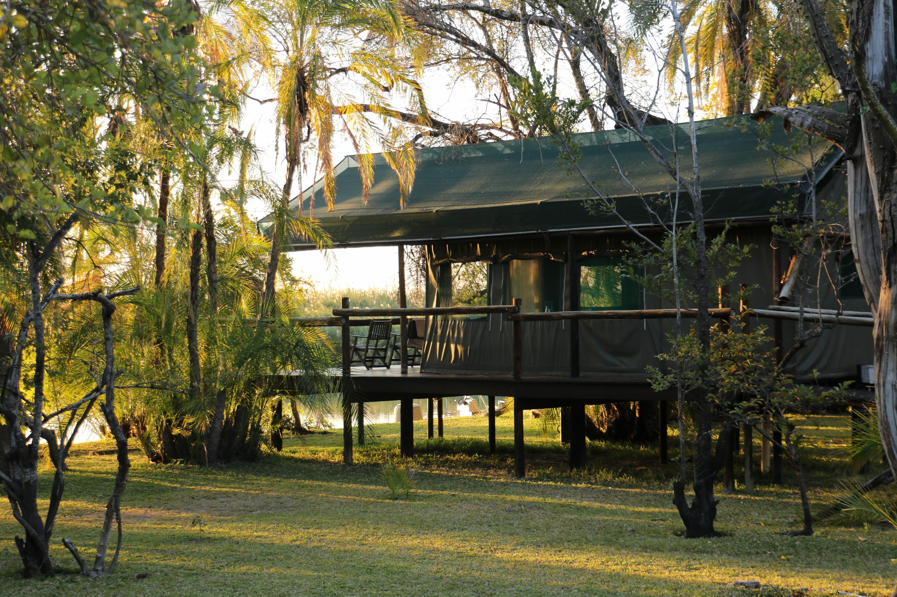
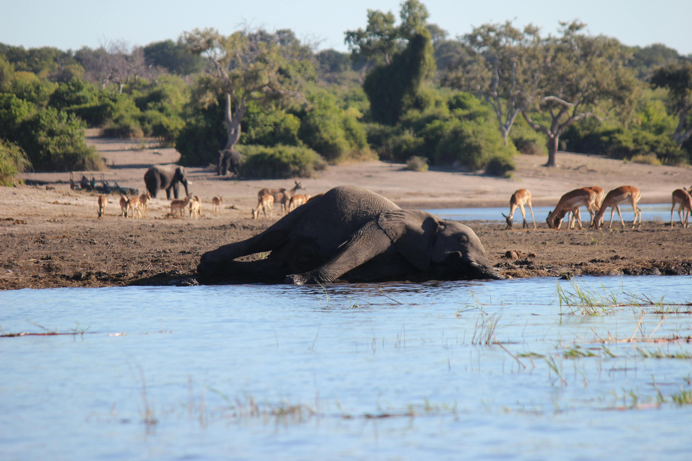
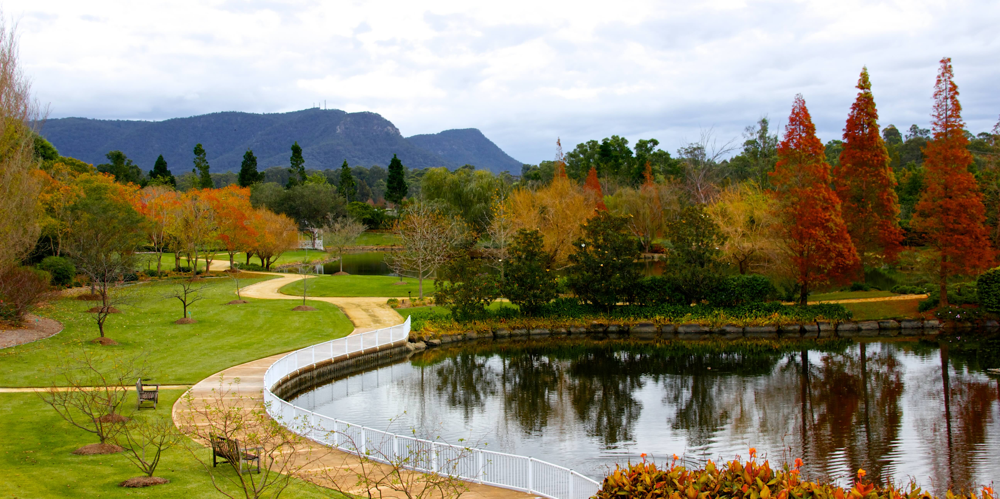

Autumn
Crisp air, golden leaves, and cozy moments wrapped in warmth.
Autumn 🍁

Kyoto is a city in Japan known for its traditional temples, gardens, and cultural heritage. In autumn, the leaves change color, creating a beautiful backdrop for exploring the city. Visitors can experience traditional tea ceremonies, visit historic districts, and enjoy the seasonal beauty of the region.
🎯 Things to do:
- Temple visits
- Garden walks
- Photography
- Cultural tours
- Tea ceremonies
- Street exploring

Great Wall of China
📍 Location: China
🌤️ Best Months: September – October
The Great Wall of China is a series of fortifications made of stone, brick, and other materials. In autumn, the weather is pleasant for hiking. Visitors can explore different sections of the wall and learn about its rich history and cultural significance.
🎯 Things to do:
- Hiking
- Photography
- Guided tours
- Scenic views
- History learning
- Exploration
.jpeg)
Seoul
📍 Location: South Korea
🌤️ Best Months: September – November
Seoul is the capital and largest city of South Korea, known for its blend of traditional culture and modernity. In autumn, the weather is pleasant for exploring the city's many attractions. Visitors can experience Korean culture through food, shopping, and historical sites.
🎯 Things to do:
- Palace visits
- Shopping
- Park walks
- Food tours
- Museums
- Night markets

Zhangjiajie National Forest Park
📍 Location: China
🌤️ Best Months: September – November
Zhangjiajie is known for its towering sandstone pillars and misty landscapes. Autumn adds colorful foliage, making it even more stunning. Visitors can explore unique natural formations.
🎯 Things to do:
- Hiking
- Cable cars
- Photography
- Scenic walks
- Viewing platforms
- Exploration

Okavango Delta
📍 Location: Botswana
🌤️ Best Months: May - September
The Okavango Delta is a unique inland delta filled with waterways and wildlife. In autumn, floodwaters begin to arrive, transforming the landscape into a lush oasis. Visitors can explore by canoe, spotting animals like hippos and elephants in a peaceful, water-filled environment.
🎯 Things to do:
- Canoe safaris
- Wildlife spotting
- Birdwatching
- Photography
- Guided tours
- Scenic flights

Namib Desert
📍 Location: Namibia
🌤️ Best Months: May - October
The Namib Desert is one of the oldest deserts in the world, famous for its towering red sand dunes. Autumn provides comfortable weather for exploring. The surreal landscapes, especially Deadvlei, offer stunning views and unique photographic opportunities unlike anywhere else on Earth.
🎯 Things to do:
- Climb dunes
- Visit Deadvlei
- Photography
- Scenic flights
- Desert tours
- Sunrise watching

Marrakech
📍 Location: Morocco
🌤️ Best Months: March – May, September – November
Marrakech is a vibrant city filled with markets, palaces, and gardens. Autumn offers comfortable temperatures for exploring the busy medina and historic sites. Visitors can experience Moroccan culture through food, architecture, and lively street scenes in this colorful destination.
🎯 Things to do:
- Explore souks
- Visit palaces
- Try Moroccan food
- Garden tours
- Cultural shows
- Shopping

Chobe National Park
📍 Location: Botswana
🌤️ Best Months: May - October
Chobe National Park is home to a diverse range of wildlife, including large herds of elephants. In autumn, the park is less crowded, making it an ideal time for game drives and wildlife photography. The Chobe River provides a scenic backdrop for these adventures.
🎯 Things to do:
- Game drives
- Wildlife photography
- Boat tours
- Nature walks
- Hiking
- Picnics

Rocky Mountains
📍 Location: United States
🌤️ Best Months: December – March
The Rocky Mountains are a mountain range in western North America known for their stunning landscapes, diverse wildlife, and outdoor recreational opportunities. In winter, the mountains offer excellent skiing and snowboarding conditions, as well as the chance to see elk and other animals in their natural habitat.
🎯 Things to do:
- Photography
- Hiking
- Camping
- Wildlife spotting
- Scenic drives
- Exploration

New England
📍 Location: United States
🌤️ Best Months: December – March
New England is a region in the northeastern United States known for its scenic beauty, rich history, and vibrant culture. In winter, the area offers a unique experience with snow-covered landscapes and opportunities to enjoy outdoor activities like skiing and snowboarding.
🎯 Things to do:
- Hiking
- Scenic drives
- Relaxing
- Festivals
- Photography
- Scenic drives

Vancouver
📍 Location: British Columbia, Canada
🌤️ Best Months: November – March
Vancouver is a vibrant city in British Columbia, Canada, known for its stunning natural beauty, diverse culture, and outdoor recreational opportunities. In winter, the city offers pleasant temperatures and fewer crowds, making it an ideal time to explore its parks, museums, and the famous Stanley Park.
🎯 Things to do:
- Park Walks
- Hiking
- Cycling
- Sightseeing
- Food Tours
- Photography

Toronto
📍 Location: Ontario, Canada
🌤️ Best Months: December – March
Toronto is the largest city in Canada and a major cultural and economic hub. In winter, the city offers a unique experience with snow-covered landscapes and opportunities to enjoy outdoor activities like ice skating and winter festivals.
🎯 Things to do:
- Museums
- Shopping
- Park Walks
- Food tours
- Sightseeing
- Events

Cusco
📍 Location: Cusco
🌤️ Best Months: April – May
Cusco is a historic city rich in Incan heritage and Andean culture. In autumn, it offers clear skies and ideal conditions for exploring ruins and nearby landscapes.
🎯 Things to do:
- Ruins Exploration
- Culture Tours
- Markets
- Walking tours
- Views
- History

Valparaiso
📍 Location: Northwest of Santiago
🌤️ Best Months: March – May
Valparaiso is a historic port city in Chile, known for its colorful houses, vibrant arts scene, and rich cultural heritage. In winter, the city offers pleasant weather and numerous attractions. Visitors can explore the cobblestone streets, visit museums, and enjoy the lively nightlife.
🎯 Things to do:
- Street art
- Hills
- Views
- Cafés
- Culture
- Walking

Bogota
📍 Location: Colombia
🌤️ Best Months: September – November
Bogota offers a mix of culture, history, and mountain views. In autumn, the weather is pleasant, making it a great time to explore museums and local life.
🎯 Things to do:
- Museums
- Markets
- Sightseeing
- Culture
- Parks
- Food tours

Mendoza
📍 Location: Argentina
🌤️ Best Months: December – March
Mendoza is a city in Argentina known for its wine production and stunning mountain scenery. In winter, the city offers pleasant weather and numerous attractions. Visitors can explore the historic center, visit world-class museums, and experience the lively street food scene.
🎯 Things to do:
- Wine tasting
- Vineyards
- Tours
- Sightseeing
- Dining
- Cycling

Paris
📍 Location: France
🌤️ Best Months: June – September
Paris is the capital and largest city of France, known for its rich cultural heritage and beautiful architecture. In summer, the city offers a vibrant atmosphere with its famous museums, delicious cuisine, and romantic ambiance. Visitors can explore the Eiffel Tower, enjoy world-class shopping, and experience the lively nightlife.
🎯 Things to do:
- Sightseeing
- Cafes
- Museums
- Walking tours
- Photography
- Shopping
.jpeg)
Prague
📍 Location: Czech Republic
🌤️ Best Months: June – September
Prague is the capital and largest city of the Czech Republic, known for its well-preserved medieval architecture and vibrant cultural scene. In summer, the city offers a delightful atmosphere with its historic castles, beautiful gardens, and lively street performances. Visitors can explore the iconic Charles Bridge, visit world-class museums, and experience the unique charm of this European gem.
🎯 Things to do:
- Walking tours
- Photography
- Sightseeing
- Cafes
- Museums
- Exploring

Bavaria
📍 Location: Germany
🌤️ Best Months: June – September
Bavaria is a state in southeastern Germany, known for its rich cultural heritage and beautiful landscapes. In summer, the region offers a delightful atmosphere with its historic castles, beautiful gardens, and lively street performances. Visitors can explore the iconic Neuschwanstein Castle, visit world-class museums, and experience the unique charm of this southern German gem.
🎯 Things to do:
- Hiking
- Photography
- Castle visits
- Festivals
- Scenic drives
- Exploring

Tuscany
📍 Location: Italy
🌤️ Best Months: June – September
Tuscany is a region in central Italy, known for its rolling hills, vineyards, and rich cultural heritage. In summer, the region offers a delightful atmosphere with its historic towns, beautiful landscapes, and vibrant food scene. Visitors can explore the charming cities of Florence and Siena, visit world-class museums, and experience the unique charm of this picturesque Italian gem.
🎯 Things to do:
- Wine tasting
- Tours
- Dining
- Photography
- Exploring
- Sightseeing

Melbourne
📍 Location: Victoria, Australia
🌤️ Best Months: March – May
Melbourne is a vibrant city known for its cultural scene, beautiful parks, and excellent food. In winter, the city offers a range of indoor activities and events, while still providing opportunities for outdoor exploration.
🎯 Things to do:
- Visit museums
- Explore laneways
- Try café culture
- Royal Botanic Gardens
- See street art
- Yarra River walks

Hunter Valley
📍 Location: Australia
🌤️ Best Months: March – May
Hunter Valley is a renowned wine region in New South Wales, Australia, famous for its excellent vineyards and scenic landscapes. The area offers a range of wine-tasting experiences and outdoor activities throughout the year.
🎯 Things to do:
- Wine tasting
- Hot air balloon rides
- Vineyard walks
- Gourmet dining
- Photography
- Scenic drives
.jpeg)
Tasmania
📍 Location: Australia
🌤️ Best Months: November – March
Tasmania is an island state of Australia known for its rugged landscapes, pristine wilderness, and rich cultural heritage. In winter, the island offers opportunities for hiking, wildlife spotting, and exploring its many national parks and historical sites.
🎯 Things to do:
- Hiking
- Wildlife spotting
- Photography
- Camping
- Scenic drives
- Exploration

Adelaide Hills
📍 Location: South Australia
🌤️ Best Months: March – May
Adelaide Hills is a picturesque region in South Australia, known for its rolling hills, vineyards, and charming towns. In winter, the area offers a range of outdoor activities and scenic views. Visitors can also enjoy the local wine culture and gourmet dining experiences.
🎯 Things to do:
- Wine tasting
- Visit Hahndorf
- Orchard picking
- Scenic drives
- Café hopping
- Hiking trails